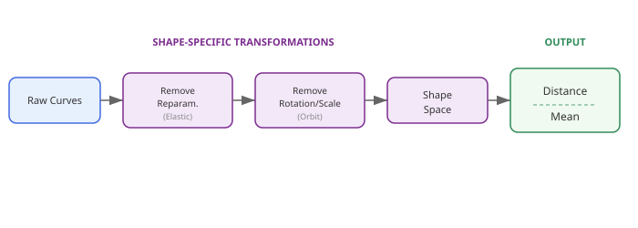
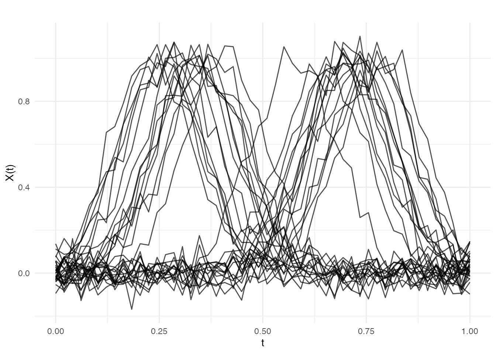
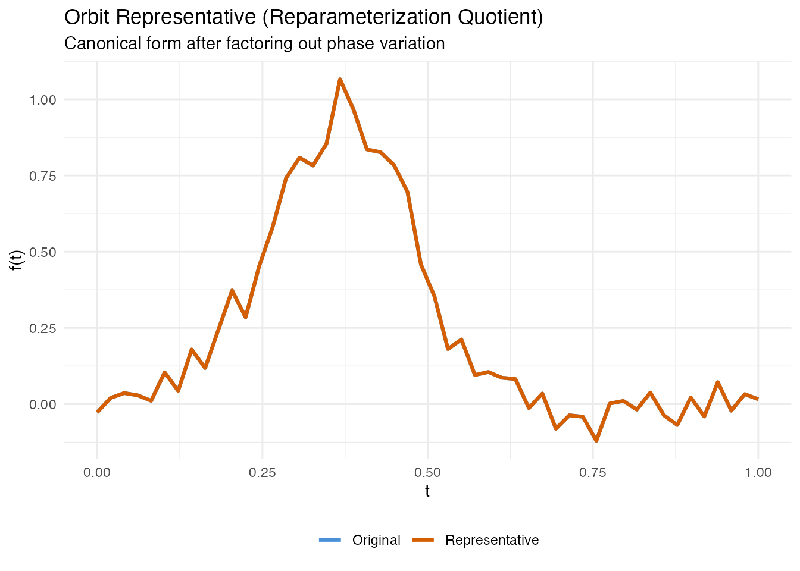
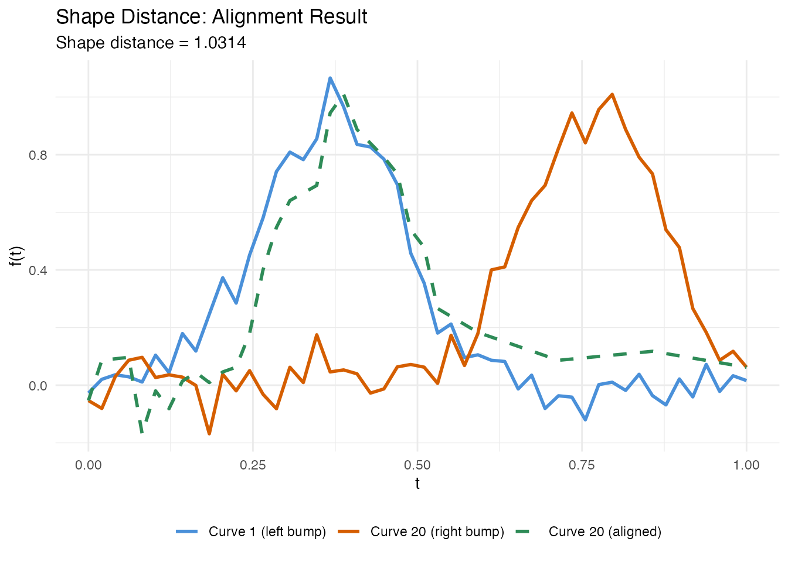
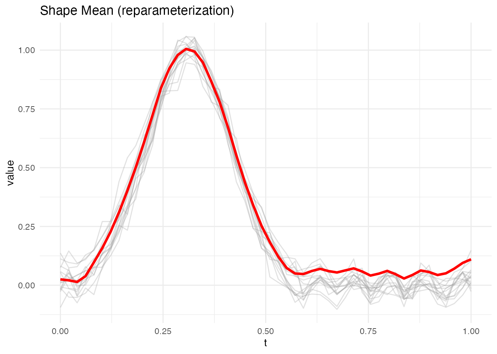
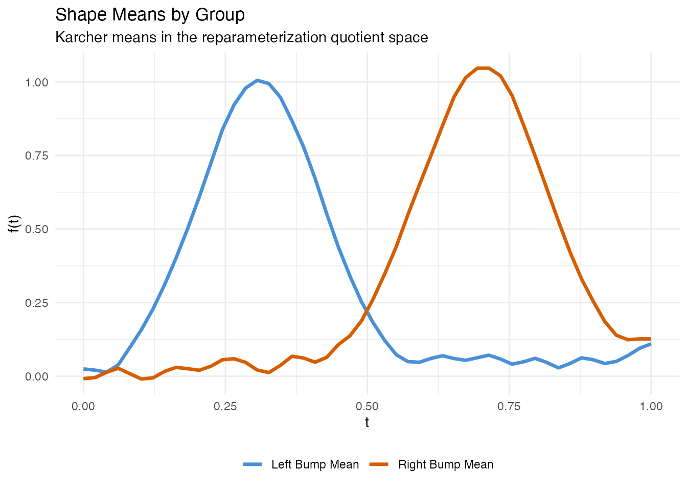
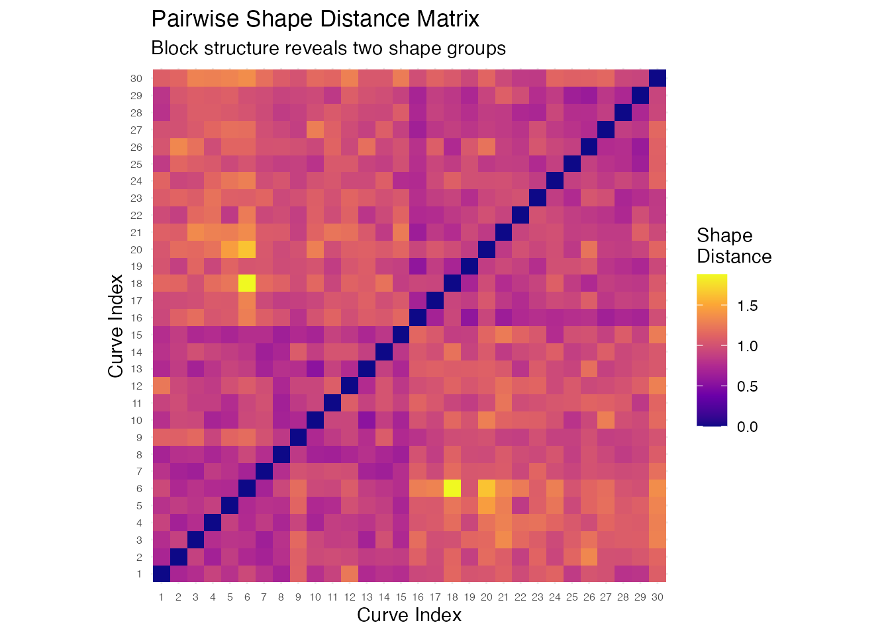

Introduction
Two curves may look different pointwise yet represent the same shape — they differ only in how they are parameterized (traversal speed), translated (vertical shift), or scaled (overall magnitude). Shape analysis provides a rigorous framework for comparing curves after factoring out these nuisance transformations.
The key idea is to work in a quotient space: the set of all curves modulo a group of transformations. Two curves that differ only by a reparameterization, translation, or scaling are identified as the same point in the quotient space. The elastic (Fisher-Rao) framework makes this quotient geometry computationally tractable by using the Square-Root Slope Function (SRSF) representation.
fdars provides four core functions for shape analysis:
| Function | Purpose |
|---|---|
shape.representative() |
Canonical form of a single curve in the quotient space |
shape.distance() |
Elastic distance between two curves modulo nuisance transformations |
shape.mean() |
Karcher mean in the quotient space (average shape) |
shape.distance.matrix() |
Pairwise shape distance matrix for a set of curves |

Simulated Data
We simulate 30 curves that represent two groups of bump-shaped profiles, inspired by letter-stroke outlines from different writers. Group 1 has bumps centered near and Group 2 near . Within each group, the bump location varies slightly, mimicking natural variation in handwriting.
set.seed(42)
n <- 30
m <- 50
argvals <- seq(0, 1, length.out = m)
# Two groups of shapes - bumps at different locations
X <- matrix(0, n, m)
for (i in 1:15) {
center <- 0.3 + rnorm(1, sd = 0.05)
X[i, ] <- exp(-((argvals - center)^2) / 0.02) + rnorm(m, sd = 0.05)
}
for (i in 16:30) {
center <- 0.7 + rnorm(1, sd = 0.05)
X[i, ] <- exp(-((argvals - center)^2) / 0.02) + rnorm(m, sd = 0.05)
}
fd <- fdata(X, argvals = argvals)
group <- rep(c("Left bump", "Right bump"), each = 15)
plot(fd, main = "Simulated Letter-Stroke Profiles (2 groups)",
xlab = "Normalized Arc Length", ylab = "Curvature (a.u.)")
Within each group, the curves share a common shape (a single bump) but differ in the exact position of the peak — this is phase variation that standard pointwise analysis would treat as genuine shape difference.
Orbit Representatives
Every curve belongs to an orbit in the quotient
space: the set of all curves that can be obtained from it by applying
the allowed transformations (reparameterization, translation, or
scaling). shape.representative() computes a canonical
member of this orbit — the orbit representative — which provides a
standard form for the curve’s shape.
# Compute orbit representative for a single curve
f_original <- X[1, ]
rep_result <- shape.representative(f_original, argvals = argvals,
quotient = "reparameterization")
df_orbit <- data.frame(
argval = rep(argvals, 2),
value = c(f_original, rep_result$representative),
type = factor(rep(c("Original", "Representative"), each = m),
levels = c("Original", "Representative"))
)
ggplot(df_orbit, aes(x = .data$argval, y = .data$value,
color = .data$type)) +
geom_line(linewidth = 1.1) +
scale_color_manual(values = c("Original" = "#4A90D9",
"Representative" = "#D55E00")) +
labs(title = "Orbit Representative (Reparameterization Quotient)",
subtitle = "Canonical form after factoring out phase variation",
x = "t", y = "f(t)", color = NULL) +
theme(legend.position = "bottom")
The representative has the same shape as the original but is reparameterized to a canonical speed. Two curves with the same shape will map to the same representative (up to numerical precision), regardless of how they were originally parameterized.
Quotient Spaces
The quotient argument controls which transformations are
factored out:
| Quotient | Factors out | Use case |
|---|---|---|
"reparameterization" |
Warping (timing differences) | Curves with different traversal speeds |
"translation" |
Vertical shifts | Curves at different baselines |
"scale" |
Reparameterization + scaling | Curves of different magnitudes |
Shape Distance
shape.distance() computes the elastic distance between
two curves in the quotient space. It returns the distance along with the
optimal warping that aligns the second curve to the first.
# Compare a left-bump curve to another left-bump curve
d_same <- shape.distance(X[1, ], X[5, ], argvals = argvals,
quotient = "reparameterization")
# Compare a left-bump curve to a right-bump curve
d_diff <- shape.distance(X[1, ], X[20, ], argvals = argvals,
quotient = "reparameterization")
cat("Same group (curves 1 vs 5):", round(d_same$distance, 4), "\n")
#> Same group (curves 1 vs 5): 0.7941
cat("Different groups (curves 1 vs 20):", round(d_diff$distance, 4), "\n")
#> Different groups (curves 1 vs 20): 1.0314Curves from the same group have a small shape distance because their bumps have the same form — only the location differs, and that is factored out. Curves from different groups have a larger distance because their shapes genuinely differ.
df_align <- data.frame(
argval = rep(argvals, 3),
value = c(X[1, ], X[20, ], d_diff$f2.aligned),
curve = factor(rep(c("Curve 1 (left bump)", "Curve 20 (right bump)",
"Curve 20 (aligned)"), each = m),
levels = c("Curve 1 (left bump)", "Curve 20 (right bump)",
"Curve 20 (aligned)"))
)
ggplot(df_align, aes(x = .data$argval, y = .data$value,
color = .data$curve, linetype = .data$curve)) +
geom_line(linewidth = 1) +
scale_color_manual(values = c("#4A90D9", "#D55E00", "#2E8B57")) +
scale_linetype_manual(values = c("solid", "solid", "dashed")) +
labs(title = "Shape Distance: Alignment Result",
subtitle = paste("Shape distance =", round(d_diff$distance, 4)),
x = "t", y = "f(t)", color = NULL, linetype = NULL) +
theme(legend.position = "bottom")
Shape Mean
shape.mean() computes the Karcher (Frechet) mean in the
quotient space. This is the curve that minimizes the total squared shape
distance to all input curves. Unlike a pointwise mean, the shape mean is
not blurred by phase variation.
# Shape mean of left-bump group
fd_left <- fd[1:15, ]
sm_left <- shape.mean(fd_left, quotient = "reparameterization",
max.iter = 20, tol = 1e-4)
print(sm_left)
#> Shape Mean (Quotient Space)
#> Curves: 15 x 50 grid points
#> Quotient: reparameterization
#> Iterations: 20
#> Converged: FALSEThe built-in plot method shows aligned curves (grey) with the mean curve (red):
plot(sm_left)
Comparing Group Means
fd_right <- fd[16:30, ]
sm_right <- shape.mean(fd_right, quotient = "reparameterization",
max.iter = 20, tol = 1e-4)
df_means <- data.frame(
argval = rep(argvals, 2),
value = c(sm_left$mean, sm_right$mean),
group = factor(rep(c("Left Bump Mean", "Right Bump Mean"), each = m))
)
ggplot(df_means, aes(x = .data$argval, y = .data$value,
color = .data$group)) +
geom_line(linewidth = 1.2) +
scale_color_manual(values = c("Left Bump Mean" = "#4A90D9",
"Right Bump Mean" = "#D55E00")) +
labs(title = "Shape Means by Group",
subtitle = "Karcher means in the reparameterization quotient space",
x = "t", y = "f(t)", color = NULL) +
theme(legend.position = "bottom")
Each shape mean captures the representative bump profile for its group without the blurring that a pointwise average would produce.
Shape Distance Matrix
shape.distance.matrix() computes all pairwise shape
distances for a set of curves. This is the foundation for downstream
tasks like clustering, multidimensional scaling, or nearest-neighbor
classification.
D <- shape.distance.matrix(fd, quotient = "reparameterization")Heatmap
# Convert to long format for ggplot
df_heat <- expand.grid(Curve1 = 1:n, Curve2 = 1:n)
df_heat$distance <- as.vector(D)
df_heat$Curve1 <- factor(df_heat$Curve1)
df_heat$Curve2 <- factor(df_heat$Curve2)
ggplot(df_heat, aes(x = .data$Curve1, y = .data$Curve2,
fill = .data$distance)) +
geom_tile() +
scale_fill_viridis_c(option = "plasma", name = "Shape\nDistance") +
labs(title = "Pairwise Shape Distance Matrix",
subtitle = "Block structure reveals two shape groups",
x = "Curve Index", y = "Curve Index") +
coord_equal() +
theme(axis.text = element_text(size = 6))
The heatmap shows clear block-diagonal structure: curves within the same group (1–15 and 16–30) have small pairwise distances, while curves from different groups have large distances. This confirms that shape distance correctly distinguishes the two bump patterns.
Using with Standard Clustering
The shape distance matrix can be passed directly to standard R clustering tools:
Best Practices
-
Choose the right quotient space. Use
"reparameterization"when curves differ in speed/timing. Add"translation"or"scale"when baseline shifts or magnitude differences are also nuisance factors. -
Check convergence of
shape.mean(). Ifconverged = FALSE, increasemax.iteror relaxtol. -
Regularization. Set
lambda > 0to prevent extreme warpings when curves are noisy or sparsely sampled. - Preprocess consistently. Smooth curves and evaluate on a common grid before shape analysis.
-
Visualize warpings. The
gammaoutput fromshape.distance()andshape.representative()reveals how much reparameterization was needed.
See Also
-
vignette("articles/elastic-alignment")— elastic curve alignment and Karcher means -
vignette("articles/elastic-clustering")— elastic k-means and hierarchical clustering -
vignette("articles/scalar-on-shape")— scalar-on-shape regression (phase-invariant prediction) -
vignette("articles/tsrvf")— the SRSF representation underlying elastic shape analysis
References
Srivastava, A. and Klassen, E. (2016). Functional and Shape Data Analysis. Springer.
Srivastava, A., Klassen, E., Joshi, S.H. and Jermyn, I.H. (2011). Shape Analysis of Elastic Curves in Euclidean Spaces. IEEE Transactions on Pattern Analysis and Machine Intelligence, 33(7), 1415–1428.
Kurtek, S., Srivastava, A., Klassen, E. and Ding, Z. (2012). Statistical Modeling of Curves Using Shapes and Related Features. Journal of the American Statistical Association, 107(499), 1152–1165.